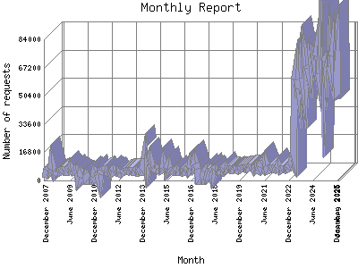

Analog 5.24
Analog 5.24 Report Magic for Analog 2.13
Report Magic for Analog 2.13The Monthly Report identifies activity for each month in the report
time frame. Remember that each page hit can result in several server requests
as the images for each page are loaded.
Note: Depending on the
report time frame, the first and last months may not represent a complete
month's worth of data, resulting in lower hits.

| Month | Number of requests | Percentage of the requests | |
|---|---|---|---|
| 1. | January 2026 | 48,446 | 1.44% |
| 2. | December 2025 | 83,214 | 2.48% |
| 3. | November 2025 | 77,712 | 2.31% |
| 4. | October 2025 | 82,290 | 2.44% |
| 5. | September 2025 | 74,076 | 2.20% |
| 6. | August 2025 | 63,909 | 1.90% |
| 7. | July 2025 | 67,984 | 2.2% |
| 8. | June 2025 | 77,454 | 2.30% |
| 9. | May 2025 | 66,558 | 1.99% |
| 10. | April 2025 | 72,114 | 2.14% |
| 11. | March 2025 | 70,528 | 2.10% |
| 12. | February 2025 | 57,744 | 1.71% |
| 13. | January 2025 | 77,376 | 2.30% |
| 14. | December 2024 | 57,890 | 1.72% |
| 15. | November 2024 | 63,975 | 1.90% |
| 16. | October 2024 | 80,280 | 2.39% |
| 17. | September 2024 | 73,644 | 2.20% |
| 18. | August 2024 | 72,041 | 2.14% |
| 19. | July 2024 | 74,649 | 2.22% |
| 20. | June 2024 | 69,378 | 2.7% |
| 21. | May 2024 | 72,365 | 2.16% |
| 22. | April 2024 | 62,713 | 1.87% |
| 23. | March 2024 | 66,782 | 1.99% |
| 24. | February 2024 | 68,592 | 2.4% |
| 25. | January 2024 | 74,058 | 2.20% |
| 26. | December 2023 | 54,270 | 1.61% |
| 27. | November 2023 | 61,278 | 1.82% |
| 28. | October 2023 | 66,720 | 1.99% |
| 29. | September 2023 | 51,132 | 1.52% |
| 30. | August 2023 | 54,561 | 1.62% |
| 31. | July 2023 | 60,246 | 1.80% |
| 32. | June 2023 | 66,204 | 1.98% |
| 33. | May 2023 | 60,120 | 1.79% |
| 34. | April 2023 | 8,982 | 0.27% |
| 35. | March 2023 | 10,848 | 0.32% |
| 36. | February 2023 | 8,360 | 0.24% |
| 37. | January 2023 | 8,487 | 0.26% |
| 38. | December 2022 | 6,950 | 0.20% |
| 39. | November 2022 | 6,349 | 0.19% |
| 40. | October 2022 | 7,008 | 0.20% |
| 41. | September 2022 | 6,740 | 0.20% |
| 42. | August 2022 | 6,863 | 0.20% |
| 43. | July 2022 | 6,759 | 0.20% |
| 44. | June 2022 | 6,567 | 0.20% |
| 45. | May 2022 | 8,427 | 0.26% |
| 46. | April 2022 | 6,801 | 0.20% |
| 47. | March 2022 | 6,380 | 0.20% |
| 48. | February 2022 | 6,175 | 0.19% |
| 49. | January 2022 | 7,315 | 0.21% |
| 50. | December 2021 | 7,667 | 0.22% |
| 51. | November 2021 | 7,097 | 0.21% |
| 52. | October 2021 | 6,390 | 0.20% |
| 53. | September 2021 | 6,059 | 0.19% |
| 54. | August 2021 | 9,092 | 0.28% |
| 55. | July 2021 | 11,675 | 0.34% |
| 56. | June 2021 | 10,152 | 0.30% |
| 57. | May 2021 | 10,231 | 0.30% |
| 58. | April 2021 | 10,292 | 0.30% |
| 59. | March 2021 | 7,948 | 0.23% |
| 60. | February 2021 | 5,800 | 0.18% |
| 61. | January 2021 | 6,514 | 0.20% |
| 62. | December 2020 | 8,069 | 0.24% |
| 63. | November 2020 | 6,579 | 0.20% |
| 64. | October 2020 | 7,551 | 0.22% |
| 65. | September 2020 | 8,028 | 0.23% |
| 66. | August 2020 | 7,741 | 0.23% |
| 67. | July 2020 | 8,113 | 0.24% |
| 68. | June 2020 | 7,317 | 0.21% |
| 69. | May 2020 | 6,898 | 0.20% |
| 70. | April 2020 | 7,441 | 0.22% |
| 71. | March 2020 | 7,524 | 0.22% |
| 72. | February 2020 | 7,322 | 0.21% |
| 73. | January 2020 | 6,797 | 0.20% |
| 74. | December 2019 | 6,573 | 0.20% |
| 75. | November 2019 | 5,917 | 0.18% |
| 76. | October 2019 | 6,608 | 0.20% |
| 77. | September 2019 | 6,791 | 0.20% |
| 78. | August 2019 | 6,597 | 0.20% |
| 79. | July 2019 | 6,280 | 0.19% |
| 80. | June 2019 | 6,317 | 0.19% |
| 81. | May 2019 | 6,847 | 0.20% |
| 82. | April 2019 | 6,663 | 0.20% |
| 83. | March 2019 | 7,059 | 0.21% |
| 84. | February 2019 | 6,374 | 0.20% |
| 85. | January 2019 | 8,062 | 0.24% |
| 86. | December 2018 | 6,957 | 0.20% |
| 87. | November 2018 | 5,422 | 0.17% |
| 88. | October 2018 | 5,750 | 0.18% |
| 89. | September 2018 | 5,458 | 0.17% |
| 90. | August 2018 | 5,735 | 0.18% |
| 91. | July 2018 | 5,945 | 0.18% |
| 92. | June 2018 | 7,110 | 0.21% |
| 93. | May 2018 | 6,440 | 0.20% |
| 94. | April 2018 | 3,378 | 0.10% |
| 95. | March 2018 | 5,789 | 0.18% |
| 96. | February 2018 | 5,369 | 0.17% |
| 97. | January 2018 | 5,574 | 0.17% |
| 98. | December 2017 | 3,906 | 0.11% |
| 99. | November 2017 | 6,533 | 0.20% |
| 100. | October 2017 | 5,498 | 0.17% |
| 101. | September 2017 | 0 | 0% |
| 102. | August 2017 | 0 | 0% |
| 103. | July 2017 | 0 | 0% |
| 104. | June 2017 | 0 | 0% |
| 105. | May 2017 | 6,832 | 0.20% |
| 106. | April 2017 | 9,999 | 0.30% |
| 107. | March 2017 | 11,887 | 0.36% |
| 108. | February 2017 | 7,941 | 0.23% |
| 109. | January 2017 | 7,572 | 0.22% |
| 110. | December 2016 | 9,483 | 0.29% |
| 111. | November 2016 | 7,121 | 0.21% |
| 112. | October 2016 | 5,510 | 0.17% |
| 113. | September 2016 | 6,288 | 0.19% |
| 114. | August 2016 | 5,888 | 0.18% |
| 115. | July 2016 | 5,445 | 0.17% |
| 116. | June 2016 | 5,042 | 0.16% |
| 117. | May 2016 | 5,495 | 0.17% |
| 118. | April 2016 | 5,341 | 0.16% |
| 119. | March 2016 | 5,558 | 0.17% |
| 120. | February 2016 | 5,548 | 0.17% |
| 121. | January 2016 | 6,597 | 0.20% |
| 122. | December 2015 | 5,574 | 0.17% |
| 123. | November 2015 | 5,330 | 0.16% |
| 124. | October 2015 | 5,671 | 0.17% |
| 125. | September 2015 | 6,196 | 0.19% |
| 126. | August 2015 | 6,788 | 0.20% |
| 127. | July 2015 | 9,120 | 0.28% |
| 128. | June 2015 | 7,156 | 0.21% |
| 129. | May 2015 | 5,694 | 0.17% |
| 130. | April 2015 | 9,635 | 0.29% |
| 131. | March 2015 | 6,215 | 0.19% |
| 132. | February 2015 | 6,084 | 0.19% |
| 133. | January 2015 | 7,333 | 0.21% |
| 134. | December 2014 | 6,608 | 0.20% |
| 135. | November 2014 | 6,997 | 0.20% |
| 136. | October 2014 | 7,537 | 0.22% |
| 137. | September 2014 | 7,043 | 0.21% |
| 138. | August 2014 | 7,324 | 0.21% |
| 139. | July 2014 | 7,905 | 0.23% |
| 140. | June 2014 | 11,654 | 0.34% |
| 141. | May 2014 | 9,211 | 0.28% |
| 142. | April 2014 | 10,588 | 0.31% |
| 143. | March 2014 | 7,817 | 0.23% |
| 144. | February 2014 | 15,229 | 0.46% |
| 145. | January 2014 | 12,860 | 0.39% |
| 146. | December 2013 | 5,325 | 0.16% |
| 147. | November 2013 | 5,513 | 0.17% |
| 148. | October 2013 | 5,598 | 0.17% |
| 149. | September 2013 | 4,655 | 0.13% |
| 150. | August 2013 | 4,938 | 0.14% |
| 151. | July 2013 | 5,623 | 0.17% |
| 152. | June 2013 | 5,492 | 0.17% |
| 153. | May 2013 | 5,211 | 0.16% |
| 154. | April 2013 | 5,842 | 0.18% |
| 155. | March 2013 | 6,068 | 0.19% |
| 156. | February 2013 | 5,055 | 0.16% |
| 157. | January 2013 | 5,853 | 0.18% |
| 158. | December 2012 | 5,688 | 0.17% |
| 159. | November 2012 | 5,477 | 0.17% |
| 160. | October 2012 | 5,413 | 0.17% |
| 161. | September 2012 | 4,331 | 0.12% |
| 162. | August 2012 | 3,866 | 0.11% |
| 163. | July 2012 | 4,314 | 0.12% |
| 164. | June 2012 | 4,655 | 0.13% |
| 165. | May 2012 | 6,047 | 0.19% |
| 166. | April 2012 | 5,114 | 0.16% |
| 167. | March 2012 | 6,128 | 0.19% |
| 168. | February 2012 | 5,430 | 0.17% |
| 169. | January 2012 | 4,279 | 0.12% |
| 170. | December 2011 | 5,548 | 0.17% |
| 171. | November 2011 | 4,779 | 0.14% |
| 172. | October 2011 | 5,117 | 0.16% |
| 173. | September 2011 | 5,431 | 0.17% |
| 174. | August 2011 | 6,256 | 0.19% |
| 175. | July 2011 | 5,699 | 0.18% |
| 176. | June 2011 | 5,420 | 0.17% |
| 177. | May 2011 | 3,975 | 0.11% |
| 178. | April 2011 | 0 | 0% |
| 179. | March 2011 | 3,608 | 0.10% |
| 180. | February 2011 | 5,171 | 0.16% |
| 181. | January 2011 | 6,011 | 0.18% |
| 182. | December 2010 | 1,603 | 0.4% |
| 183. | November 2010 | 0 | 0% |
| 184. | October 2010 | 0 | 0% |
| 185. | September 2010 | 0 | 0% |
| 186. | August 2010 | 0 | 0% |
| 187. | July 2010 | 0 | 0% |
| 188. | June 2010 | 4,101 | 0.12% |
| 189. | May 2010 | 5,018 | 0.14% |
| 190. | April 2010 | 4,928 | 0.14% |
| 191. | March 2010 | 5,095 | 0.16% |
| 192. | February 2010 | 1,394 | 0.4% |
| 193. | January 2010 | 0 | 0% |
| 194. | December 2009 | 4,665 | 0.13% |
| 195. | November 2009 | 6,187 | 0.19% |
| 196. | October 2009 | 5,498 | 0.17% |
| 197. | September 2009 | 5,066 | 0.16% |
| 198. | August 2009 | 5,718 | 0.18% |
| 199. | July 2009 | 7,436 | 0.22% |
| 200. | June 2009 | 5,685 | 0.17% |
| 201. | May 2009 | 6,120 | 0.19% |
| 202. | April 2009 | 5,310 | 0.16% |
| 203. | March 2009 | 5,515 | 0.17% |
| 204. | February 2009 | 6,123 | 0.19% |
| 205. | January 2009 | 6,387 | 0.20% |
| 206. | December 2008 | 5,763 | 0.18% |
| 207. | November 2008 | 5,420 | 0.17% |
| 208. | October 2008 | 4,722 | 0.14% |
| 209. | September 2008 | 5,435 | 0.17% |
| 210. | August 2008 | 4,843 | 0.14% |
| 211. | July 2008 | 5,382 | 0.17% |
| 212. | June 2008 | 6,082 | 0.19% |
| 213. | May 2008 | 9,946 | 0.30% |
| 214. | April 2008 | 6,420 | 0.20% |
| 215. | March 2008 | 5,431 | 0.17% |
| 216. | February 2008 | 6,469 | 0.20% |
| 217. | January 2008 | 5,907 | 0.18% |
| 218. | December 2007 | 1,700 | 0.6% |
Most active month December 2025 : 83,214 requests handled.
Monthly average: 16231 requests handled.
This report was generated on January 22, 2026 01:58.
Report time frame December 18, 2007 17:05 to January 21, 2026 05:45.
| Web statistics report produced by: | |
| Analog 5.24 | Report Magic for Analog 2.13 |